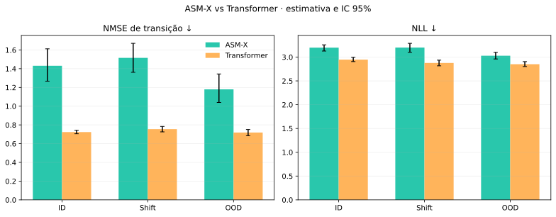
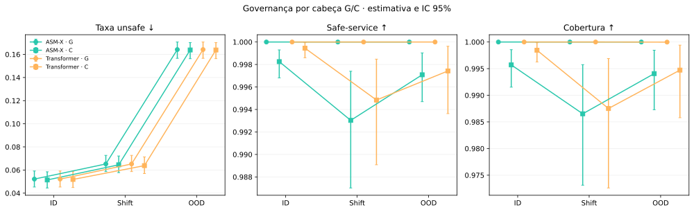
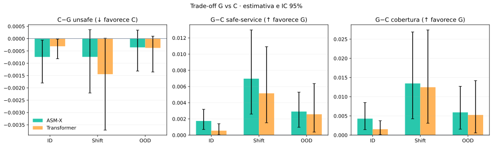
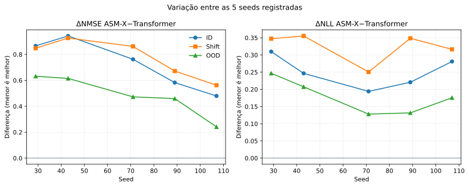

1/33
gates passaramFalhar um gate significa que seu critério registrado não foi satisfeito nesta avaliação.
ATTR-RTG · resumo registrado · regimes ID / Shift / OOD
Leitura correta: este painel descreve apenas esta avaliação registrada. Ele não demonstra segurança, nem superioridade universal de ASM-X ou Transformer. “Unsafe” é uma métrica operacional do benchmark, não uma garantia de safety no mundo real.
q95: a banda usa o quantil empírico de 95% do resíduo absoluto na metade residual da calibração. q95 não é intervalo conformal, IC bootstrap, cobertura decisória ou garantia de safety; seus valores não estão neste resumo e não são inferidos pelo dashboard.
Falhar um gate significa que seu critério registrado não foi satisfeito nesta avaliação.
29, 43, 71, 89 e 107. Os pontos por seed mostram variação; os ICs 95% vêm do resumo.
ID, mudança de distribuição (Shift) e fora de distribuição (OOD).
Neste registro, Transformer tem NMSE e NLL menores que ASM-X nos três regimes. As diferenças ASM-X−Transformer são positivas em todos eles. Isso é resultado específico deste teste, não uma alegação geral.
C reduz levemente a taxa unsafe em troca de menor safe-service e cobertura. Os deltas usam direções explícitas: unsafe = C−G; safe-service e cobertura = G−C.
Somente Transformer.RTG1-Z passou. Portanto, o conjunto registrado não sustenta uma conclusão ampla de sucesso.

| Regime | Arquitetura | NMSE (IC 95%) | NLL (IC 95%) |
|---|---|---|---|
| ID | ASM-X | 1.4308 [1.2670, 1.6126] | 3.1980 [3.1273, 3.2577] |
| ID | Transformer | 0.7238 [0.7058, 0.7432] | 2.9476 [2.9060, 2.9958] |
| Shift | ASM-X | 1.5156 [1.3615, 1.6707] | 3.2005 [3.0997, 3.2889] |
| Shift | Transformer | 0.7546 [0.7256, 0.7840] | 2.8769 [2.8167, 2.9362] |
| OOD | ASM-X | 1.1798 [1.0397, 1.3439] | 3.0290 [2.9601, 3.1007] |
| OOD | Transformer | 0.7191 [0.6848, 0.7511] | 2.8511 [2.8018, 2.9049] |

| Regime | Arquitetura | Cabeça | Unsafe (IC 95%) | Safe-service (IC 95%) | Cobertura (IC 95%) |
|---|---|---|---|---|---|
| ID | ASM-X | G | 5.217% [4.533%, 5.916%] | 100.000% [100.000%, 100.000%] | 100.000% [100.000%, 100.000%] |
| ID | ASM-X | C | 5.143% [4.448%, 5.849%] | 99.825% [99.681%, 99.930%] | 99.571% [99.153%, 99.856%] |
| ID | Transformer | G | 5.217% [4.533%, 5.916%] | 100.000% [100.000%, 100.000%] | 100.000% [100.000%, 100.000%] |
| ID | Transformer | C | 5.186% [4.488%, 5.883%] | 99.945% [99.860%, 99.996%] | 99.845% [99.626%, 99.987%] |
| Shift | ASM-X | G | 6.524% [5.866%, 7.267%] | 100.000% [100.000%, 100.000%] | 100.000% [100.000%, 100.000%] |
| Shift | ASM-X | C | 6.450% [5.776%, 7.212%] | 99.303% [98.702%, 99.740%] | 98.652% [97.312%, 99.575%] |
| Shift | Transformer | G | 6.524% [5.866%, 7.267%] | 100.000% [100.000%, 100.000%] | 100.000% [100.000%, 100.000%] |
| Shift | Transformer | C | 6.380% [5.697%, 7.135%] | 99.484% [98.908%, 99.848%] | 98.752% [97.260%, 99.689%] |
| OOD | ASM-X | G | 16.417% [15.660%, 17.070%] | 100.000% [100.000%, 100.000%] | 100.000% [100.000%, 100.000%] |
| OOD | ASM-X | C | 16.382% [15.628%, 17.021%] | 99.709% [99.470%, 99.903%] | 99.407% [98.729%, 99.846%] |
| OOD | Transformer | G | 16.417% [15.660%, 17.070%] | 100.000% [100.000%, 100.000%] | 99.998% [99.991%, 100.000%] |
| OOD | Transformer | C | 16.380% [15.633%, 17.020%] | 99.743% [99.364%, 99.962%] | 99.473% [98.579%, 99.941%] |

Exemplo no OOD: em ASM-X, C−G unsafe = -0.035%, enquanto G−C safe-service = 0.291% e G−C cobertura = 0.593%. A leitura é um trade-off, não “safety comprovada”.

architecture.csv · governance.csv · g_vs_c.csv · seeds.csv · gates.csv · dashboard_data.json